Общее описание
MarsWars - стратегия в реальном времени по вселенной Ultimate DOOM.
Меню игры
Левая кнопка мыши: выбор элементов меню/изменение/увеличение значения.
Правая кнопка мыши: уменьшение значения или установка случайного.
В левом нижнем углу отображается версия игры.
Раздел КАРТА
Содержит настройки карты:
Число (0-4294967295) - номер карты - определяет "случайное" расположение объектов(деревьев, камней, озёр). Можно ввести своё или выбирать случайное(правый клик).
Позиции - вариант расположения игроков на карте.
Размер - размер карты в пикселях(3000-6000).
Озёра - наличие озёр.
Тип жидкости(вода/кислота/лава/грязь) и текстура земли зависят от номера карты.
Преграды - количество скал и озер.
Случайная карта - устанавливает случайные настройки карты.
Раздел ИГРОКИ
Таблица игроков. Имя, статус игрока(маленький квадрат рядом с именем: "С" - игрок-компьютер, "+" или "-" - готовность игрока в сетевой игре, "?" - с игроком пропала связь, "@" - игрок-сервер в сетевой игре, "<" - сам игрок), раса/сторона, клан(номер команды) и цвет(нельзя менять).
В одиночной игре или в сетевой(если запущен сервер): кликая по статусу игрока можно добавлять или убирать компьютерных игроков, так же можно менять расу и команду себе или компьютерным игрокам. Левый клик по полю имени игрока-компьютера меняет уровень сложности ИИ.
Правый клик по слоту игрока(по полю имени) меняет игроков местами(изначально игрок-человек находится на первой, "красной" позиции и так его можно переместить на другую). Нельзя меняться местами с другим игроком-человеком в сетевой игретолько с пустым слотом, либо с ИИ).
В сетевой игре(клиент) в этом разделе нечего менять нельзя(кроме слота).
Раздел НАСТРОЙКИ
Подраздел Звук - настройки громкости звука и музыки.
Подраздел Игра - настройка скорости прокрутки экрана, включение/выключение: прокрутки мышью, полноэкранного режима, а так же установка имени игрока(нельзя менять когда игра уже началась или когда включен сетевой режим - включен сервер или клиент) и языка интерфейса.
Раздел СОХРАНИТЬ/ЗАГРУЗИТЬ
Сохранение или загрузка игры. Нельзя сохранятся в сетевой игре или при просмотре записи.
Раздел ЗАПИСИ
Выбор и просмотр записаных игр.
Раздел КАМПАНИИ
Список миссий кампании. Все миссии доступны сразу.
Раздел СХВАТКА
Настройки режима игры, сервера или клиента, а так же - записи игры. Включать/выключать запись можно в любой момент игры.
Нельзя записывать реплеи в кампании.
Част. Х / Freq. X - частота, с которой сервер будет отсылать сетевые сообщения клиентам: 1 - каждый шаг(30 раз в секунду), 2 - каждый второй(20 раз в секунду) и 3 - каждый третий(15 раз в секунду).
Раздел ЧАТ
Внутриигровой чат при сетевой игре.
Механика игры
Принцип записи игры и работы клиента
Каждый шаг игра записывает самую основную информацию о Х юнитах в файл(при ведении записи игры), либо отсылает по сети от сервера к клиентам(в сетевой игре). Число Х можно менять - чем Х больше, тем плавнее будут движения юнитов в игре(при просмотре записи, либо при игре по сети со стороны клиента; у клиента так же уменьшается время задержки между приказом и реакцией на приказ, но при этом увеличивается входящий трафик), если Х меньше, то всё наоборот.
В настройках записи игры, а так же в настройках клиента есть поля ЮЗШ(UPT) - "Юнитов за шаг" - это указанное выше Х. Нижняя граница как для записей, так и для клиента - 30, верхняя - 100 для записей и 255 для клиента.
ЮЗШ(UPT) у клиента можно менять во время игры.
Выбор юнитов и приказы
Выбор юнитов и зданий происходит левой кнопкой мыши, а приказы отправляются правой.
Здания выбираются только "точечным" кликом. Несколько зданий или юнитов можно выбрать через клавишу shift или двойным кликом(выбор всех юнитов этого типа в пределах экрана). Выбранных юнитов можно заносить в отряды - комбинация ctrl+1..9, "снять" назначение в отряд - ctrl+0. Кроме этого, комбинация ctrl+A - выбор всех боевых юнитов на всей карте.
Приказы юнитам:
- правый клик в любую точку - двигаться, нападая на всех встречных врагов;
- правый клик с зажатым Ctrl - двигаться, игнорируя врагов;
Приказ клика с/без ctrl можно менять местами в меню(раздел "игра").
- правый клик в точку, в которой находится вражеский юнит(не зависит от зажатого ctrl) - двигаться туда, игнорируя всех, пока эта точка не окажется в радиусе видимости и если по прибытию там всё еще стоит вражеский юнит - будет атакован он;
-"C" - остановиться на месте.
Отдавать приказы можно также кликая и на мини-карту.
Играя за сторону ада, можно быстро отправить войска в телепорт, если кликнуть правой кнопкой мыши по его иконке на панели.
Зданиям - казарме/вратам, а также телепорту демонов можно устанавливать "пункт сбора" правой кнопкой мыши.
Строительство
Для постройки зданий необходимо наличие хотя бы одного главного здания. Нажмите на иконку здания(главное здание при этом выбирать не обязательно) - вокруг курсора начнёт рисоваться требуемый радиус - если он красный, значит для здания недостаточно места, если синий - курсор находится за пределами радиуса базы/границами карты(они будут отображаться), если зелёный - можно строить(начать строительство - левый клик, отменить - правый). Иконки зданий могут быть неактивны в следующих случаях: нет главного здания, количество зданий конкретного типа достигло лимита, недостаточно энергии.
Начинать постройку здания можно только раз в 2 секунды.
Если в процессе постройки какого-то здания количество расходуемой энергии становится больше максимальной или главные здания разрушаются - строящееся здание так же разрушается.
Иконки юнитов становятся активными при наличии хотя бы одних казарм(UAC) или врат(HELL), если армия меньше лимита и достаточно энергии. Если кликнуть по иконке юнита и при этом не было выбрано ни одной казармы/врат - приказ на создание отправится одной незанятой казармаме/вратам, если же было выбрано одно или несколько зданий - приказ отправится только им.
Здание может строить только одного юнита одновременно. Нельзя заказывать очередь из нескольких юнитов.
Перемещение камеры
Перемещение камеры осуществляется стрелками или зажатой средней кнопкой мыши. Также возможно перемещать камеру курсором мыши: достаточно пододвинуть его к краю окна. Перемещение мышью можно включить/выключить в меню. Скорость перемещения так же настраивается в меню.
Горячие клавиши
Q W E A S D Z - соответствуют юнитам(в том же порядке, в котором расположены иконки на панели). X - отмена.
R T Y F G H - здания.
U I O J K L M < - апгрейды. > - отмена.
Ctrl+C - установить мину(только для инженеров UAC).
Alt - рисует цветные рамки и полоски здоровья над всеми юнитами.
Shift+C - выгрузить всех из транспорта.
Прочее
Кнопкой Pause/Break можно включать/выключать паузу в сетевой игре. Если на паузу игру ставит игрок-клиент - то снять паузу может либо только он, либо игрок-сервер. Если игру останавливает игрок-сервер, то снять с паузы может только он. В выделенном сервере снимать паузу может любой игрок.
PrtScr - сделать скриншот.
Кнопкой Delete можно разрушать здания или убивать юнитов.
На иконках игровой панели(левая часть экрана) отображаются цифры:
-в левом верхнем углу(белым цветом) - у юнитов или апгрейдов - время до конца создания/исследования;
-в левом верхнем углу, чуть ниже(тёмно-желтым цветом) - у юнитов - количество казарм/врат в которых этот вид юнита в данный момент создаётся;
-в правом верхнем(зелёным) - у юнитов и зданий - количество выбраных юнитов/зданий этого вида;
-в правом нижнем(тёмным оранжевым) - у юнитов и зданий - количество этих юнитов/зданий, а так же: у UAC на иконке апгрейда на мины(количество мин), у HELL - на икноке "зомбификации"(количество зомби всех видов). Если количество зданий/юнитов достигло(или превысило) ограничения - цифра становится серой.
-зелёный символ "+" в левом верхнем углу иконок означает, что апгрейд исследован.
Ресурсы и лимит армии
Добываемых ресурсов(золота, дерева, минералов или другого как в WarCraft/StarCraft) в игре нет. Есть энергия(производят специальные здания), которая расходуется на строительство/создание юнитов/исследование апгрейдов. Текущий максимальный уровень энергии и количество расходуемой энергии отображаются голубым и белым цветом соответственно под мини картой.
На строительство здания, создание юнита и исследование апгрейда требуется 1 еденица энергии.
Максимальное количество юнитов - 100 на игрока. Здания(в т.ч. и мины инженеров) также считаются в этот лимит.
Просмотр записей игры
- ускорение времени;
- левый клик - промотать на 2 секунды вперед, правый - на 10;
Столбец кнопок "all", "player 1" и т.д. - возможность выбора за какого игрока будет идти просмотр записи.
Режимы игры
Схватка - обычный режим, цель - уничтожить всех врагов из чужих команд.
Две крепости - режим, в котором игроки принудительно объединяются в 2 команды(красный с желтым и зеленый с синим) и их базы появляются рядом. Пустые слоты игроков заполняются ИИ 5.
Вторжение - все игроки объединяются в одну команду, пустые слоты заполняются ИИ 5, в центре карты появляется "поляна" с порталом из которого волнами(всего 20) идут монстры. Первая волна начинается через 3 минуты, каждая последующая - через 1 минуту + 2_секунды*номер_следующей_волны после смерти последнего монстра. Монстры в 3 раза крепче обычных.
Захват точек - на карте появляются 4 точки, которые нужно захватить. Точка представляет собой окружность радиусом 100 пикселей, она отображается как на карте(поверх всех объектов, включая туман войны), так и на миникарте - цветом игрока-владельца в данный момент. Что бы захватить точку, необходимо отправить внутрь неё юнита. Для того, что бы перезахватить точку, захваченную до этого игроком-адом достаточно 2х секунд, а игроком-UAC - необходимо 60 секунд(либо быстрее, если в захвате участвуют много юнитов). Точка восстанавливает здоровье юнитов, находящихся внутри неё, а кроме этого, пехоте людей даёт щиты. После захвата всех точек одним игроком(или одной командой) - все вражеские юниты и здания уничтожаются.
Общее для юнитов и зданий
Детектор - юнит(или здание) способное раскрывать невидимых врагов.
Все здания не восприимчивы к сплеш-урону(кроме атаки сержанта и его зомби). Недостроенное здание получает больше урона(броня как у обычного юнита). Если максимальное количество энергии падает до 0(разрушены все генераторы/адские символы и главные здания) - ВСЕ здания взрываются.
Броня вычитается из наносимого урона. Минимальный возможный урон - 1. Начальная броня юнитов - 0, зданий - 8.
Описание зданий
Обе стороны имеют по 6 идентичных по функциям зданий(перечисление идёт в том же порядке, в каком расположены иконки на панели):
  |
Главное здание. Центр базы, даёт 2 единицы энергии и позволяет строить. Доступное количество - 2. Если их 2, то переназначение центра базы с одного здания на другое осуществляется выбором и правым кликом по нему. Если будут уничтожены все главные здания - на миникарте раскрываются все юниты этого игрока(в кампаниях не работает).
Hell Keep / Адская Крепость
UAC Command Center / Командный центр
Прочность: 3000
Радиус: 70
Hell Keep / Адская Крепость после апгрейда становится детектором. Так же после апгрейда на броню зданий - создаёт вокруг себя ауру боли - все вражеские юниты медленно теряют своё здоровье.
UAC Command Center / Командный центр после апгрейда на броню зданий генерирует силовые поля у своих и союзных юнитов и строений вокруг себя. Поля дают +2 к защите и поглощают на себя 1/4 урона от плазмы(снаряды импа, какодемона, барона и плазмаганнера), но игнорируются огнестрелом.
|
  |
Производит юнитов. Количество - 8.
Hell Gate / Адские Врата
UAC Military unit / Войсковая часть
Прочность: 1500
Радиус: 70
|
  |
Даёт 1 единицу энергии. Количество - 4.
Hell Symbol / Адский Символ
UAC Generator / Генератор
Прочность: 700
Радиус: 40
|
  |
Исследует улучшения. Количество - 1.
Hell Pool / Адский Омут
UAC Research Center / Исследовательский центр
Прочность: 1500
Радиус: 65
|
  |
Оборонительное сооружение, максимальное количество - 20. После апгрейда становится детектором.
Hell Tower / Адская Башня
Атакует снарядами юнита Cacodemon, по самим Какодемонам атакует снарядами Imp-а. Сорострельность чуть быстрее одного выстрела в секунду.
UAC Turret / Турель
Атака аналогична пулемётчику(Commando) UAC.
Общее:
Прочность: 500
Радиус: 25
Радиус атаки: 260
|
  |
Здание со специальной способностью. У каждой стороны своё.
Hell Teleport / Адский Телепорт
Перемещает одного юнита в любую точку карты. Перезарядка зависит от силы перемещаемого юнита - чем сильнее, тем дольше. Расстояние до пункта перемещения должно быть больше радиуса видимости здания(230). Перемещает только своих и союзных юнитов.
UAC Radar / Радар
Разведывает любую точку карты на 5 секунд(в т.ч. раскрывает всех невидимок и мины инженера). Перезарядка - 30 секунд. Так же видит невидимок и вокруг себя.
Общее:
Прочность: 500
Радиус: 40
Эти сооружения можно быстро выбирать во время игры: для этого необходимо нажать на иконку здания на панели, либо на соостветствующую горячую клавишу.
|
 |
Проклятые казармы - казармы UAC, захваченные и проклятые демонами. Постоянно производят зомби.
Прочность: 1500
|
Нейтральные объекты и здания из кампаний |
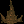 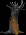
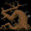 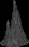
 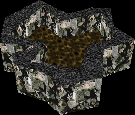 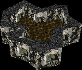 |
Естественные препятствия на карте. Сюда же относятся водные/кислотные/лавовые/грязевые озёра. Лава и кислота не "жгут" юнитов.
|
 |
Портал А и Портал В - построены UAC для экспериментов с технологией телепортации на спутниках Марса - Деймосе и Фобосе соответственно.
Прочность: 5000
|
 |
Крепость Тайны - странная адская крепость. Является главным зданием(как Адская крепость).
Прочность: 3000
|
 |
Алтарь смерти - сильный источник адской энергии демонов, дающий 2 единицы энергии. Детектор.
Прочность: 1000
|
 |
Супер генератор UAC - генератор, дающий 2 единицы энергии.
Прочность: 1000
|


 |
Базы UAC - различные промышленные или военные постройки UAC. Является главным зданием(как Коммандный центр).
Прочность: 3000
|


 |
Гражданские постройки - различные постройки людей на Земле.
Прочность: 3000
|
Здания UAC имеют постоянный бонус брони +4.
Описание юнитов
("Время создания" - указывается в секундах)
Дистанция дальней атаки юнитов равна "дальности обзора".
HELL
У каждого юнита HELL есть состояние "боли"(PainState) - в котором он короткое время(1/2 секунды) корчится и не может атаковать или передвигаться. PainState наступает каждое Х попадание и не зависит от наносимого урона.
| 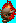 |
Lost Soul
Время создания: 5
Здоровье: 90
Скорость: 22
Урон: 15(ближний бой, ~один укус в секунду), апгрейд: +4
Дальность обзора: 270
Pain state: каждое 4 попадание
Парящий - летающий, но его может атаковать Demon. После специальных апгрейдов получает способности: детектор и "зомбификация" - при атаке пехотинцев UAC превращает их в зомби(сам Lost при этом исчезает).
Может захватывать поврежденные казармы UAC(если их здоровье меньше 2/3), превращая их в "проклятые казармы".
|
| 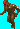 |
Imp
Время создания: 6
Здоровье: 70
Скорость: 8
Урон: 15(дальний бой, ~один выстрел в секунду), апгрейд: +3
Дальность обзора: 250
Pain state: каждое 3 попадание
Слабый юнит дальнего боя. Не может атаковать дальней атакой других импов(переключается на рукопашную, урон 15(19 после апгрейда)). Дальней атакой наносит удвоенный урон по враждебным юнитам ада.
|
| 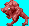 |
Demon
Время создания: 10
Здоровье: 150
Скорость: 12
Урон: 40(ближний бой, ~один укус в секунду), апгрейд: +4
Дальность обзора: 220
Pain state: каждое 8 попадание
Броня: 1
Средний юнит ближнего боя. Не может атаковать летающих юнитов(только парящих). Может быть сильно ускорен и сделан невидимым(после апгрейдов).
|
| 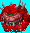 |
Cacodemon
Время создания: 20
Здоровье: 180
Скорость: 8
Урон: 30(дальний бой, ~один выстрел в секунду), агрейд: +5
Дальность обзора: 255
Pain state: каждое 8 попадание
Средний летающий юнит дальнего боя. Не может атаковать дальней атакой других какодемонов(переключается на рукопашную, урон 40(44 после апгрейда)). Наносит двойной урон по зданиям.
|
| 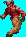 |
Baron Of Hell
Время создания: 40
Здоровье: 530
Скорость: 8
Урон: 50(дальний бой, ~один выстрел в секунду), апгрейд: +10
Дальность обзора: 220
Pain state: каждое 9 попадание
Сильный юнит дальнего боя. Не может атаковать дальней атакой других баронов(переключается на рукопашную, урон 60). Дальней атакой наносит вдвое меньший урон по другим демонам.
|
| 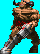 |
Cyberdemon
Время создания: 90
Здоровье: 1700
Скорость: 9
Урон: 100(дальний бой, +урон по площади, ~один выстрел в секунду)
Дальность обзора: 260
Pain state: каждое 12 попадание
Сильный юнит дальнего боя. Эффективен против зданий. Может быть только один. Нельзя призывать одновременно с Mastermind-ом. Иммунен к сплешу от ракет и гранат.
Взрывной волной от ракет цепляет своих и союзных юнитов(урон вдвое меньший, здания не повреждаются).
|
| 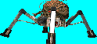 |
Spider Mastermind
Время создания: 90
Здоровье: 1700
Скорость: 9
Урон: 15(дальний бой, ~7-8 выстрелов в секунду)
Дальность обзора: 260
Pain state: каждое 9 попадание
Сильный юнит дальнего боя. Изначальный детектор. Может быть только один. Нельзя призывать одновременно с Cyberdemon-ом. Иммунен к сплешу от ракет и гранат.
|
| 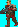 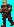 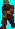 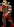 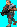 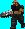 |
Zombie
Pain state: каждое 2 попадание
Скорость: 10
Дальность обзора: 250
Прочие характеристики аналогичны пехотинцам UAC из которых они были сделаны.
|
UAC
У пехоты UAC отсутствует pain state.
| 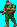 |
Engineer
Время создания: 6
Здоровье: 95
Скорость: 12
Урон: 6(дальний бой, ~один выстрел в секунду), апгрейд: +2
Дальность обзора: 265
Быстрый, но слабый юнит дальнего боя. Чинит свои и союзные здания. Может стать детектором после апгрейда. Так же, после специального апгрейда, может устанавливать мины(выбрать инженера и нажать ctrl+C), мины входят в лимит армии.
|
| 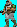 |
Medic
Время создания: 5
Здоровье: 95
Скорость: 12
Урон: 6(дальний бой, ~один выстрел в секунду), апгрейд: +2
Дальность обзора: 230
Слабый юнит дальнего боя. Лечит своих и союзных юнитов. После апгрейда получает антидемонический токсин - при атаке по юнитам ада парализует их на секунду. На время действия токсина демоны перестают видеть невидимок.
|
| 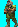 |
Sergant
Время создания: 10
Здоровье: 95
Скорость: 12
Урон: зависит от дальности до цели: минимальный(на границе видимости):7, максимальный(при стрельбе вплотную): 27; радиус сплеш-урона так же зависит от расстояния - чем дальше, тем радиус больше, ~один выстрел в секунду, апгрейд: +2
Дальность обзора: 240
Юнит дальнего боя, эффективен на коротких дистанциях. Атака сержанта в 3 раза чаще других юнитов вызывает painstate у демонов.
|
 |
Commando
Время создания: 15
Здоровье: 95
Скорость: 10
Урон: 6(дальний бой, 8 выстрелов в секунду), апгрейд: +2
Дальность обзора: 260
Средний юнит дальнего боя.
|
| 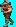 |
Bomber
Время создания: 40
Здоровье: 95
Скорость: 9
Урон: 70(дальний бой, +урон по площади, ~1 выстрел в 2 секунды), апгрейд: +5
Дальность обзора: 295
Сильный юнит дальнего боя. Эффективен против зданий и групп противника.
Взрывной волной от гранат цепляет своих и союзных юнитов(урон вдвое меньший, здания не повреждаются).
Не может стрелять, если цель находится рядом с ним(минимальный радиус стрельбы - 70). Не может атаковать воздушные цели.
|
| 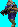 |
Plasmagunner
Время создания: 25
Здоровье: 95
Скорость: 14
Урон: 18(дальний бой, ~3-4 выстрела в секунду), апгрейд: +3
Дальность обзора: 260
Средний летающий юнит дальнего боя.
|
| 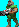 |
BFG Marine
Время создания: 65
Здоровье: 95
Скорость: 9
Урон: 100(дальний бой, +урон по большой площади, ~1 выстрел в 2 секунды), апгрейд: +15
Дальность обзора: 260
Сильный юнит дальнего боя. Эффективен против больших групп противника. По пехоте UAC наносит урон в 2 раза меньший.
|
| 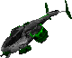 |
Воздушный транспорт
Время создания: 30
Здоровье: 200
Броня: 2
Скорость: 22
Дальность обзора: 260
Быстрый летающий транспорт UAC. Может перевозить до 10 пехотинцев.
|
| 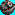 |
Мина
Здоровье: 1
Урон: 200(взрыв, реагирует на наземных и Lost-ов, радиус сплеша - 100), апгрейд: +15
Дальность обзора: 100
Устанавливается инженерами. Для установки мины необходимо наличие энергии. Обнаруживается только радаром UAC. После апгрейда может стать детектором, не видит чужих мин. Взрывной волной цепляет своих и союзных юнитов(урон вдвое меньший, здания не повреждаются).
|
Маленькие юниты(вся пехота людей, зомби, лост и имп) получают втрое больший урон от огнестрела(медик, инженер(и их зомби), коммандо(и зомби) и Mastermind), но вдвое меньший сплеш-урон от ракет и гранат.
Апгрейды
Первые 5 апгрейдов идентичны с каждой стороны.
| 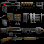 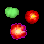 |
Улучшение атаки
Бонус к урону для всех юнитов(для каждого юнита указан отдельно).
Cyberdemon и Mastermind бонуса к атаке не имеют.
Время изучения: 240 секунд.
|
| 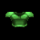 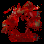 |
Улучшение брони юнитов
Даёт 3 единицы брони для всех юнитов.
Барону и демону ада - +4.
Время изучения: 240 секунд.
|
| 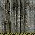 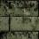 |
Улучшение защиты зданий
Начальную броню зданий(8 ед.) поднимает до 15.
Для главных зданий активирует ауру боли(у ада) или плазменные щиты(у UAC).
Время изучения:
- UAC: 180 секунд.
- HELL: 240 секунд.
|
| 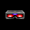 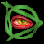 |
Детекторы/Адское зрение
Становятся детекторами:
- у Hell: адская крепость, адская башня и Lost soul;
- у UAC: турель, инженеры и мины.
Время изучения: 180 секунд.
|
| 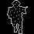 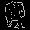 |
Невидимая пехота/Spectre
Вся пехотя людей или только Demon ада становятся невидимыми.
Время изучения: 180 секунд.
|
HELL |
| 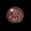 |
Регенерация
Юниты ада медленно восстанавливают своё здоровье.
Время изучения: 180 секунд.
|
| 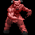 |
Адская сила
Всем юнитам даёт +1 к скорости передвижения(Demon-у - +5) и уменьшает время перезарядки всем юнитам, кроме Cyberdemon-а и Mastermind-а, даёт +2 к защите и ускоряет полет снарядов. Действует в течении 30 секунд, после чего апгрейд нужно исследовать заного(в некоторых миссиях кампаний действует постоянно).
Время изучения: 60 секунд.
|
| 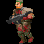 |
Зомбификация
Даёт Lost Soul-ам способность при атаке пехоты UAC превращать их в зомби(или захватывать и проклинать бараки UAC).
Время изучения: 60 секунд.
|
UAC |
| 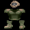 |
Лёгкая броня
Увеличивает скорость передвижения всей пехоты на 2 единицы.
Время изучения: 120 секунд.
|
| 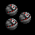 |
Мины
Даёт способность инженерам устанавливать мины.
Время изучения: 60 секунд.
|
| 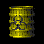 |
Антидемонический токсин
Медики, атакуя юнитов ада, парализуют их на некоторое время.
Время изучения: 60 секунд.
|
Кампания
Сюжет
Сюжет кампании соответствует оригинальному сюжету первого DOOM. Будущее, Union Aerospace Corporation провдит эксперименты по телепортации между спутниками Марса - Фобосом и Деймосом. В какой-то момент всё начинает идти не по плану и с Фобоса поступает сигнал бедствия, а Деймос практически сразу пропадает с орбиты. Спустя время, с Марса высылают десант.
Миссии
Кампания состоит из двух частей: 11 миссий за Ад, и 11 за UAC.
Часть за Ад показывает вторжение и завоевание спутников Марса - Фобоса и Деймоса, некоторой поверхности самого Марса, а так же начало вторжения на Землю. Деймос будет телепортирован в измерение Ада.
Часть за UAC - о возвращении под контроль людей захваченных Адом территорий, экспедицию на Деймос через портал и далее в сам Ад.
|